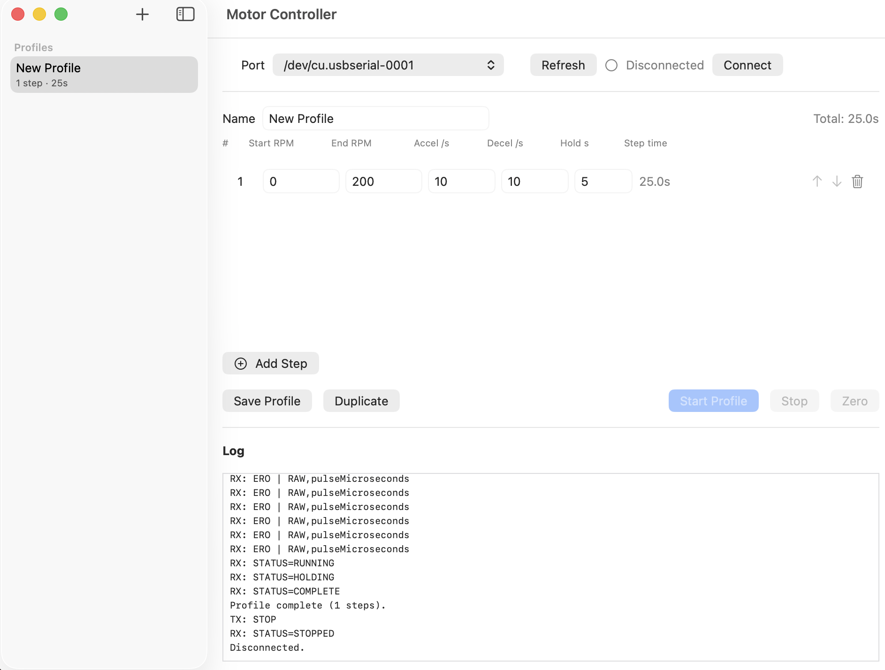

Assay-development context, LFIA workflow experience, image-based analysis, and diagnostic product thinking.
About MicroCD Labs
Engineering support for microfluidic and diagnostic product development.
MicroCD Labs is an early-stage technical company focused on helping research and product teams turn assay, fluidic, cartridge, and consumable requirements into clearer development plans.
Founder-led technical work
Experience spanning research, diagnostics, and product translation.
MicroCD Labs is led by Snehan Peshin, Ph.D. The founder background represented in company materials includes a Ph.D. from UC Irvine and experience across Zoetis, BlueJay Diagnostics, and Vanderbilt.
This experience informs a practical approach to assay development, lab-on-disc systems, LFIA workflows, microfluidics, experimental development, and the handoff from technical concept to product-development planning.
Lab-on-disc, fluidic architecture, component integration, sample handling, and workflow definition.
Requirements, experimental planning, technical troubleshooting, prototype coordination, and design decisions.
Supplier questions, engineering summaries, partner-ready materials, and development documentation.

Representative development work
Programmable motor-profile control for centrifugal workflows.
MicroCD Labs has developed prototype controller software to define and execute timed rotational profiles while communicating with embedded motor-control hardware over a serial connection.
- Profile definitionStart and end RPM, acceleration, deceleration, hold time, and calculated step duration.
- Bench communicationSerial-port connection and command exchange with controller firmware.
- Execution visibilityRun, hold, completion, stop, and device-response logging for development troubleshooting.
Prototype engineering software under development. The interface is not presented as a released, safety-rated, or validated commercial motor controller.
How capabilities are presented
Specific about experience. Careful about proof.
Capabilities are described as experience and support areas rather than unsupported facilities, certifications, or regulatory outcomes.
Deliverables, timelines, suppliers, and external specialists are defined before work begins.
Catalog products and early development work are positioned for research use unless a separate written scope states otherwise.
Start with the development challenge
Bring the technical problem, not a polished scope.
MicroCD Labs can begin with the assay, cartridge, fluidic, consumable, supplier, or workflow question your team is trying to resolve.